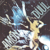
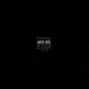
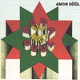
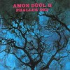
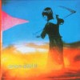

strange music page
progressive rock * * * amon duul
#独サイケ、アモンデュールです。名前がイイですよね。
AMON DUULのオリジナルの方は3枚目のPARADISEWARTS DUULだけが諸行無常サイケフォークで、他のアルバムはなんだかグシャグシャした音の塊、壊れてます。でもカッコいいです。
で、分家のAMON DUUL IIはもうちょい整理されたサイケデリックロック。1枚目とか好きかな？アルバム出すたびダメになってくよーな気が。
D.Andersonってのは元ホークウィンドのベース。何故かVDGGの人とかとAMON DUUL名義で何枚か出してます。意外と良いです。
|
- Amon Duul
- Amon Duul II
- Phallus Dei
- Yeti
- Tanz Der Lemminge
- Carnival In Babylon
- Wolf City
- Vive La Trance
- Amon Duul (Dave Anderson's)
|
#アモンデュールの1stです。イッてしまっている人たちがパーカッションを叩いて、ギターを弾いて、わめいている音の塊があります。その混沌とした塊を編集して作品にしています。そんなアルバムなので当然、曲らしい展開は無いです。無いですが、エフェクトを多用したぐちゃぐちゃな音は時として気持ち良いです。

- Im Garten Sandosa
Der Garten Sandosa
Im Morgentau
Bitterlings Verwandiung
- Ein Wunderhubsches Madchen
Traumt Von Sandosa
Kaskados Minnelied
Mama Duul Und Ihre
Sauerkrautband Spliet Auf
- Rayner
- Ulrich
- Helge
- Krischke
- Eleonora Romana
- Angelika
- Uschi
#前作よりはちょっと静かになった感じでしょうか、良く聴くといろいろなコラージュや操作がされていることに気づきます。なんか民族的というか...フツーの人には薦められないですけど、ひとりでヘッドホンで聴いてるのは気持ち良いです。ちなみに国内版です、よくこんなもの国内盤で出せたなーと思います。良くやったポリスター。

- Booster
- Bass, Gestrichen
- Tusch FF.
- Singvogel Ruckwarts
- Lua-Lua-He
- Shattering & Fading
- Nachrichten Aus Cannabistan
- Big Sound
- Krawall
- Blech & Aufbau
- Natur
POLYSTAR: POCP-2400 (original released 1969, Metronome Musik)
#吉祥寺Disk Unionで定価で購入、\2500でした。Amon Duul(ドイツのへヴィサイケバンド)の3枚目のアルバムです。1,2枚目は曲とは呼べないようなノイズとパーカッションと雄叫びの音の塊のアルバムでしたが、このアルバムではアコースティック楽器メインで、静かなサイケフォークを演奏しています。わびさびの世界というか、単調なギターに生きる気なさそうなボーカルですが、何となく落ち着いた気分になれます(俺だけかもしれないけど)
ちなみにオリジナルはOhrレーベルからのリリースで、CDの4、5曲目はシングルからのボーナストラックです(けっこー良いです)。(1999.2.28)

- Love is Peace
- Snow your thurst and sun your open mouth
- Paramechanische Welt
- Eternal Flow
- Paramechanical World
- Lemur (percussions,guitars,chorus)
- Ulrich (bass,chorus,piano)
- Dadam (guitars,vocals)
- Ella (harp,bongos)
- Hansi (flute,bongos)
- Helga (percussions)
- Noam (African percussion)
- Chris (bongos)
- John (guitars)
CAPTAIN TRIP RECORDS: CTCD-017 (1995, original released 1971, Ohr Label)
#Amon Duul "II"の方の1枚目。LPでしか持って無いんですけど、ジャケも音もカッコイイです。デロデロの混沌サイケ音なんですけど、本家のAMON DUULより楽曲的な志向は強いみたいで、イキすぎていないサイケ、バランスが丁度いいのかも。
元HAWKWINDのD.Andersonが参加してます。

- Kanaan
- Dem Guten, Schonen, Wahren
- Luzifers Ghilom
- Henriette Krotenschwanz
- Phallus Dei
- Dieter Serfas (drums,electric cymbals)
- Peter Leopold (drums,percussions,piano)
- Shrat (bongos,vocals,violin)
- Renate Knaup (vocals,tambourine)
- John Weinzierl (guitars,bass)
- Chris Karrer (violine,guitars,soprano sax,vocals)
- Falk Rogner (organ,synthesizers)
- Dave Anderson (bass)
- Holger Trulzsch (turkish drums)
- Christian Borchard (vibraphone)
#Amon Duul IIの2枚目、インプロビゼーションのダイナミズムはこのアルバムが一番だと思います。エスニックで混沌とした雰囲気が良いです、ジャケットも格好良いですし。最後の曲は異色のジャーマンサイケフォーク(?)でAmon Duulの方のメンバーが参加してるようです。

- Soap Shop Rock
- Burning Sister
- Halluzination Guillotine
- Gulp A Sonata
- Flesh-Coloured Anti-Aircraft Alarm
- She Came Through The Chimney
- Archangels Thunderbird
- Cerberus
- The Return Of Ruebezahl
- Eye-Shaking King
- Pale Gallery
- Yeti (Improvisation)
- Yeti Talks To Yogi (Improvisation)
- Sandoz In The Rain (Improvisation)
- Peter Leopold (drums)
- Shrat (bongos,vocals)
- Renate Knaup (vocals,tambourine)
- John Weinzierl (guitars,12-strings guitars,vocals)
- Chris Karrer (violin,guitars,12-strings guitars,vocals)
- Falk Rogner (organ)
- Dave Anderson (bass)
- Rainer (guitars,vocals on 10.)
- Ulrich (bass on 10.)
- Thomas (flute on 10.)
REPETOIRE RECORDS: REP-4275-WY
LIBERTY RECORDS: (1970)
#これはD.Anderson(Hawkwindにも在籍)の方のAmon Duul IIです。1982年頃のアルバムらしいです。Amon Duul II初期のエスニックな雰囲気を持っているのですが、本家の方の
濃さには及ばないような感じです。でもこーゆー希薄な雰囲気というか、中途半端なのもなかなか良いかも。
1曲目なんて、サイケと言うより淡い感じのシンフォで(ちょっとノヴァリスみたいな)結構気に入ってます。
- One Moment of Anger is Two Pints of Blood
- Hawk Meets Penguin (Part One)
- Hawk Meets Penguin (Part Two)
- Dave Anderson
- Guy Evans
- John Weinzierl
- Julie Wareing
#あのHAWKWINDのR.Calvertをボーカルに迎えたアルバムです。AMON DUUL II でなくてAMON DUUL名義になってます。ま、元々D.Andersonが初期HAWKWINDにいたことも関係してか、初期HAWKWINDのような音になっています。ちょっと新しめの音が聞こえるのはOzric Tentaclesのメンバーが入ってるからでしょうかね(たぶんEd OzricがEd Wynneで、Joie OzricがJoie Hinton)個人的にはもっともっとグチャグチャなサイケで混沌な音を期待したんですけど、それ程でもなくて意外とスッキリしてます。R.Calvertはこのアルバムからしばらくして死んでます。(1999.11.27)
- Big Wheel
- Urban Indian
- Adrenarin Rush
- Visions of Fire
- Drawn To The Flame Part 1
- They Call It Home
- Die Losung
- Drawn To The Flame Part 2
- Dave Anderson
- John Weinzierl
- Guy Evans
- Julie Wareing
- Robert Calvert
- Ed Ozric
- Joey Ozric
- Marcus Diess
- Tony 'T.S.' McPhee
- Mick Jones
- Mike Chetwood
DEMI MONDE: CDTB-115